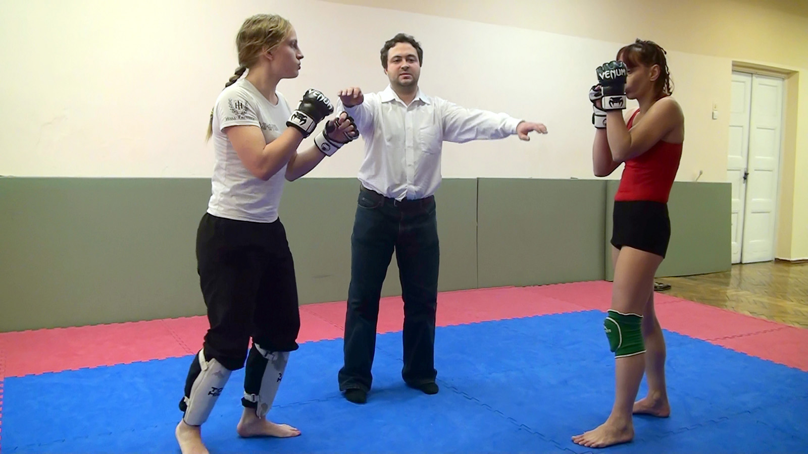
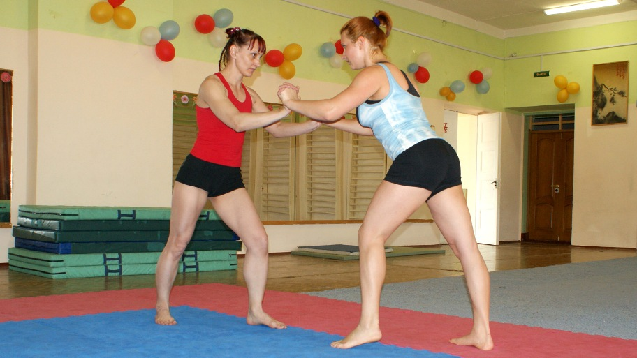

Участницы соревнований 2012 - 2013 годов
Таис
 Другие фото
Другие фото


Взглянув на Таис (клуб "Намазон", Спортивный клуб "Кемпо-Кан", Санкт-Петербург) вне спортивного зала, трудно предположить, что очаровательная девушка перед Вами - это сильный и опытный универсальный боец. Таис принимает активное участие в работе клуба "Намазон" со времени его основания, успешно выступает в соревнованиях по сабмишн грэпплингу (борьбе до капитуляции) и ММА боях. При росте 170 см и весе 59 - 61 кг она может бороться и биться с девушками в весовых категориях 60+ и 70+. Кроме того, физическая сила и хорошая техническая подготовка Таис позволяет ей достаточно успешно выступать в смешанных поединках.
Таис в ММА боях
Таис против Елены Васильевой. Рождественский Кубок 2012
Регламентом поединка было предусмотрено 3 раунда по 4 минуты с минутным перерывом между раундами. Однако такого количества раундов для выяснения отношений между соперницами не понадобилось. Таис победила Лену (168 см / 60 кг) уже в первом раунде.
Другие фото


Заняв доминирующая положение сверху, Таис имела возможность практически без сопротивления наносить удары сопернице в голову, но предпочла закончить поединок боевым приёмом на руку.
Таис против Кары Теллер. 2012

В течение 2012 года Таис провела с Карой Теллер (169 см / 55 кг) три поединка. В двух поединках чистую победу одержала Таис, в одном (судейским решением вследствие дисквалификации Таис) – Кара. В качестве примера ниже приведён фотоальбом второго боя Таис и Кары. Таис в этом бою одержала победу уже в первом раунде.
Другие фото


{kind=link}
{kind=link}
{kind=link}
{kind=link}
{kind=link}
{kind=link}
{kind=link}
{kind=link}
{kind=link}
Отметим, что Кара, в отличие от их первого поединка, смогла оказать заметное сопротивление, пару раз ей удавалось перехватывать инициативу, но силы были уж очень неравные.
Таис в борьбе по правилам Сабмишн Грэпплинг
Таис одержала победу во всех турнирах по сабмишн грэпплингу, организованных клубом «Намазон» в 2008 – 2011 годах. Ей не было равных как на татами,
так и на песчаных пляжах.
Победила Таис и в отдельных поединках с весьма сильными участницами. Она заставила капитулировать (сдаться) Ирину Дергачёву (Изиду) и
Анну Михайленко - известных украинских бодибилдерш, неоднократно побеждала Алесю Вересову – многократную чемпионку Белоруссии по
армрестлингу и в последнее время тренера по вольной борьбе.
В 2012 году Таис одолела Варвару Акулову (175 см / 75 кг) – «самую сильную девочку планеты» в юности (что дважды подтверждено Книгой рекордов Гиннеса) и мастера спорта по тяжелой атлетике и пауэрлифтингу в настоящее время.
Таис против Варвары Акуловой
После почти двухлетнего перерыва в июне 2013 года Таис встретилась на татами со своей старой соперницей - Еленой Васильевой
(169 см / 71 кг), которая за это время прибавила в силе, технике и весе.
В ходе более чем 20 минутной борьбы, Лена одолела свою более опытную соперницу. Таис впервые проиграла матч Елене Васильевой.
Таис протв Елены Васильевой
ММА. Статистика результатов за 2012 год
число побед /число поражений / число ничьих - 3 - 1 - 0 (на 8 мая 2012 года)
Видео ММА боёв Таис (Видео 9, 17 и 18), её сабмишн грэпплинг (Видео 19, 29, 33 и 35) и смешанных (mixwrestling) поединков (Видео 28, 30, 31-1, 31-2, 32 и 34) в 2012 - 2013 годах можно приобрести в нашем магазине на Gumroad.